Milestone 3 · Step 3 of 4 · UI pass
Milestone 3 UX Options
Each image is a screenshot of the real app with the new UI added on top, using the app's own styles. All the images share one mock world, so every option is shown next to the other new features.
How these were made.
- A script starts the game, adds the mock UI to the live map and the Orders pane, and captures each option at 1440 × 800 (desktop) and as a Pixel 7 (phone).
- The province borders are real (geoBoundaries ADM2, in the map's own projection). Baleares is split by island. The Asturias and Madrid splits are not drawn.
- The mock world is Turn 7, Late October 1936, from the Republic's seat, drawn over the real turn-1 armies.
- The battle images sit on whatever turn 1 actually resolved, so their battles differ from one capture to the next.
- Every number is example data: costs, yields, odds and weather.
Defaults. Each image changes one feature and leaves the rest at these defaults:
- resources in the header;
- sub-territories shown only where a territory is contested;
- every rail line drawn;
- the tabbed territory pane;
- the list-style recruitment panel.
First, five readings of your answers
The stack designs below depend on these readings. Correct any that are wrong before judging the images.
Header: date, timer, resources, readiness
- The date reads "Turn 7 · Late October 1936".
- The timer is the dark chip.
- Readiness: the faction chips show who is planning and who is ready. Computer players are always ready.
- Short names: on desktop the chips switch to REP, NIC and SIC, so everything fits on one line.


Sub-territories on the map


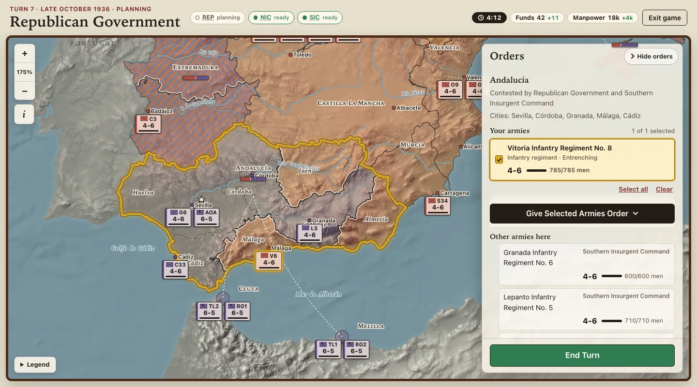
The territory pane: units, builds and recruiting
Your note asked for options. A territory now has three things to order: its units, each sub-territory's build queue, and recruiting at the capital.
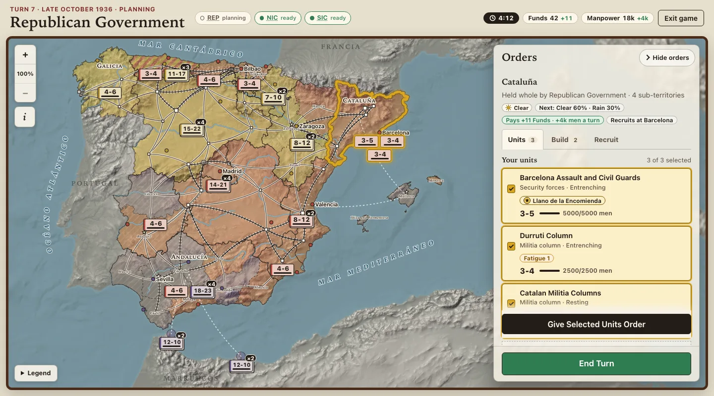
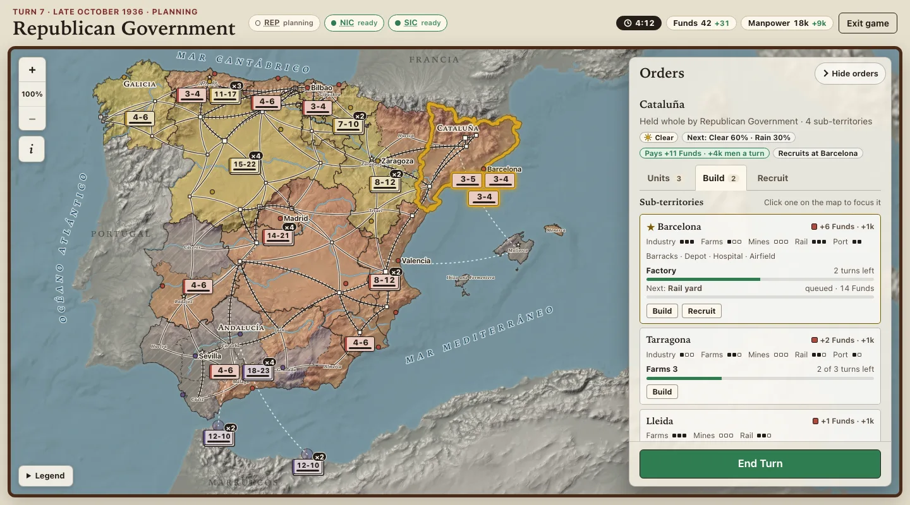
- development levels (Industry, Farms, Mines, Rail, Port);
- buildings;
- the queue: the build in progress has a bar, and the next one waits.


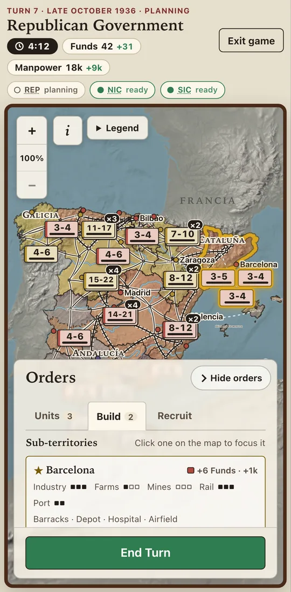

Focusing one sub-territory

Orders in contested ground, and Replenish

- Pills say what contested means here: no income, builds paused, no recruiting.
- Units attack by default and gain fatigue.
- A demoralized unit holds, and says it has no general to rally it.
- The menu offers only Attack (the default) and Withdraw, which names the route through your own sub-territories. Move, Entrench, Rest and Replenish are greyed out with the reason.

Recruiting
Every unit type is listed. A type you can't train yet is greyed out and says what it needs; hovering adds the details.
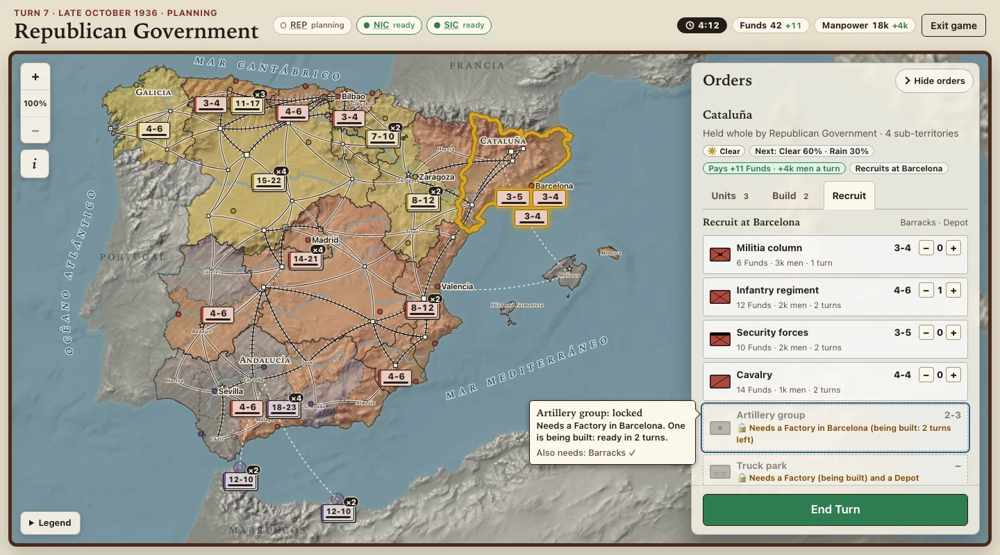
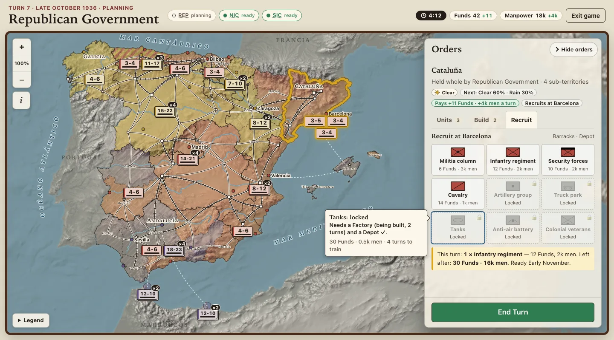
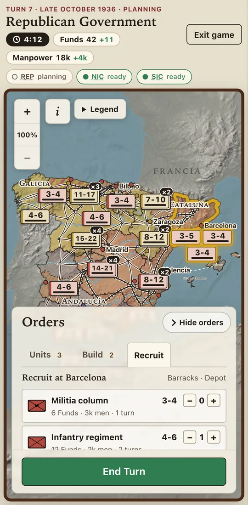
Moving units: weather, terrain, rail and odds
Four units are leaving Madrid; under the new rule, units leaving one territory with the same order form one army for the turn. A summary at the top shows the army and its moves left. Each destination shows its weather; the map chips show it too.
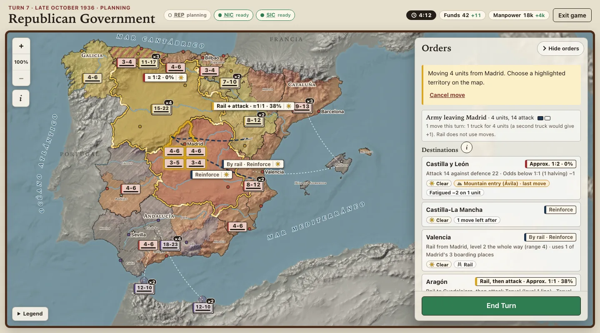
- weather;
- "Mountain entry (Ávila) · last move";
- "Fatigued −2 on 1 unit";
- rail destinations ("By rail · Reinforce" to Valencia, "Rail, then attack" to Aragón), drawn as dashed lines on the map.
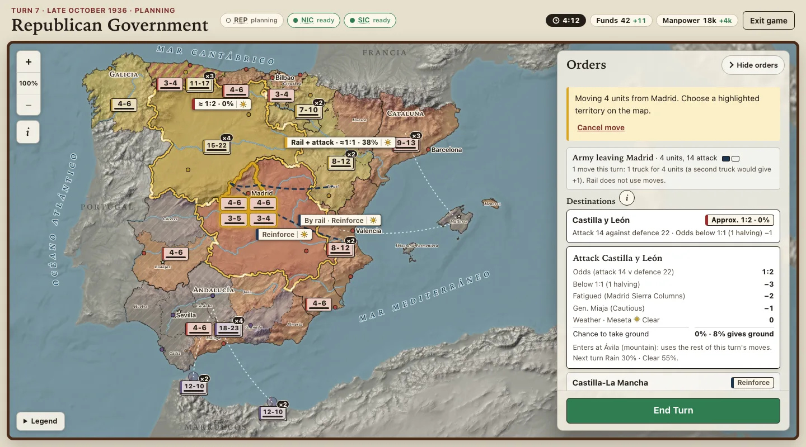
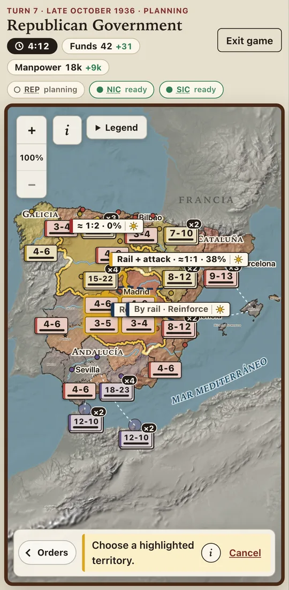
Rail
Rail belongs to sub-territories, as you asked:
- Stations: each province with rail has a station square; bigger squares are higher levels.
- Lines: adjacent rail provinces join with a thin curve. Level 2 and up get cross-ties and a heavier line.

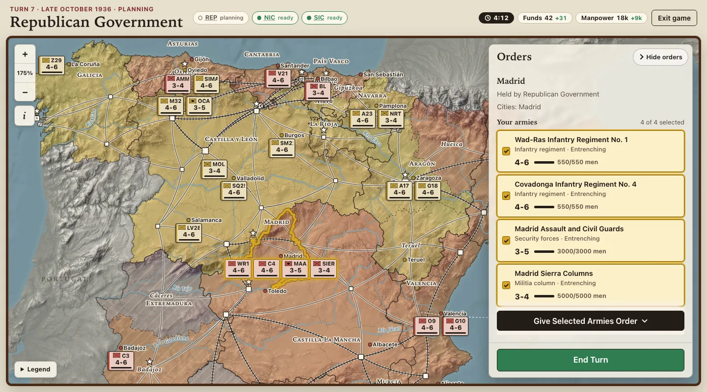


Battle results on the d20
Only the column for this battle's odds is shown, as you asked. The die, every modifier and the final score come first.


Air

- selecting one shows its range ring and mission buttons;
- a raid shows its target, its modifiers and the four outcome chances;
- a red arrow on the map marks the raid on Sevilla.

Setup: the turn timer

What the phone captures show
- The header takes three rows: the timer and the two resources, then the readiness chips.
- The territory sheet shows about one card below the territory header.
- Choosing a destination folds the sheet away, so the map chips carry all of the move information.
Single designs to approve
Each of these has one design in the images above.
Not mocked in this pass
- The hot-seat handoff screen. With balances hidden, it must not show the previous player's Funds. That needs no new design.
- Generals: the roster screen and the sacking order. Only the general badge on a unit appears above.
- Recon results: the enemy balances and queues a recon flight reveals.
- The simulation harness output. It is JSON only, so there is no UI.
- Timer details: the Pause button (local play), the 1-minute and 10-second warnings, and the "time ran out" line in the turn results.